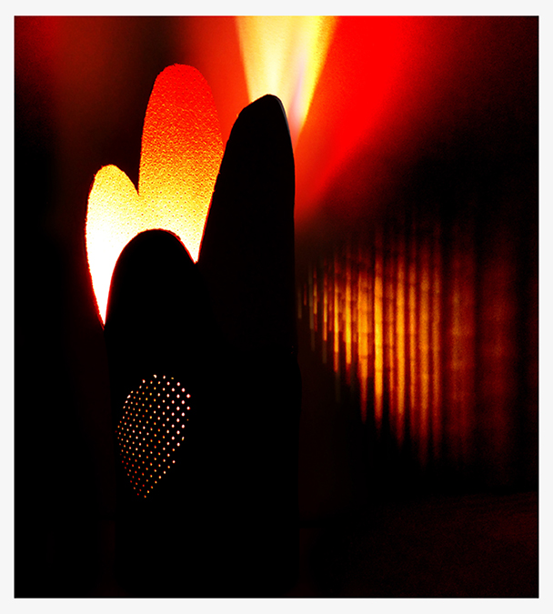
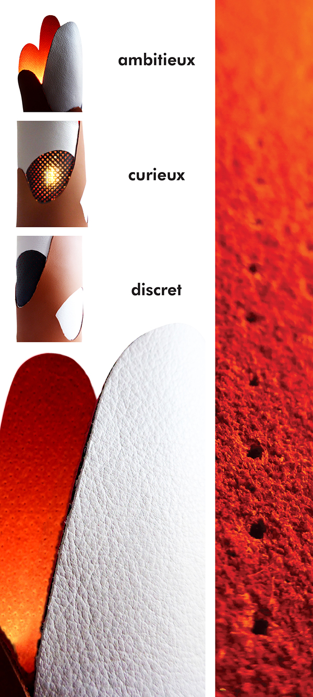
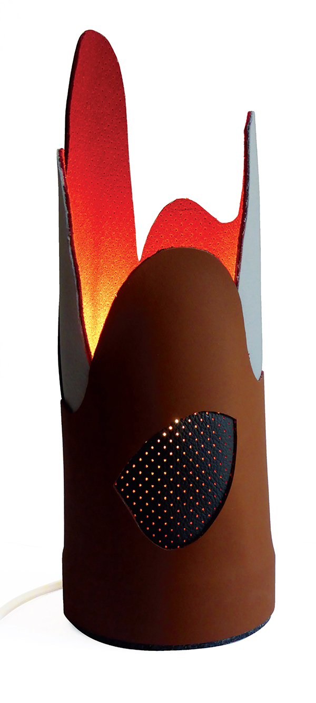

Autoportrait I 2017
Cette lampe est un autoportrait conçu
en cuir. Le cuir, un matériau naturel
qui détermine ma personnalité vraie et entière. La lampe repose sur un socle stable
pour définir que j’ai les pieds sur terre et circulaire pour le regard porté sur l’environnement.
Ma curiosité par les formes ajourées et ma discrétion à travers la perforation du cuir.
L’ambition mise en avant avec la forme élancée. Le rouge exprime le magma créateur
qui sommeille en moi et devient
en fusion lorsqu’on l’allume.

